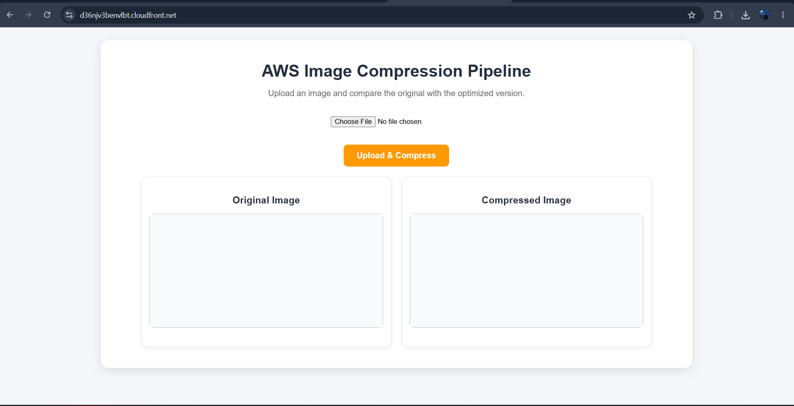
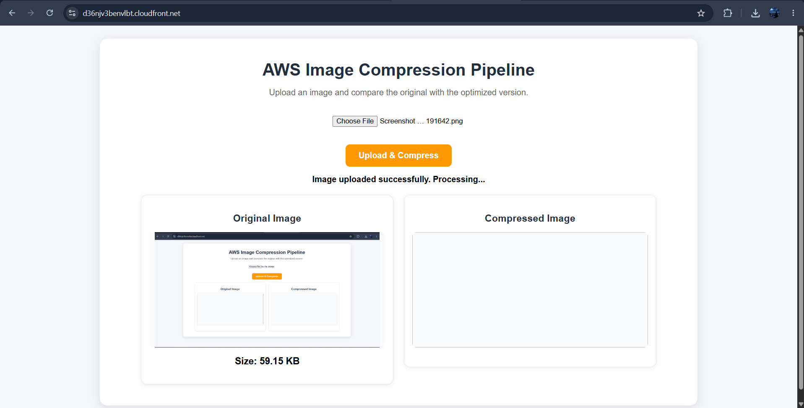
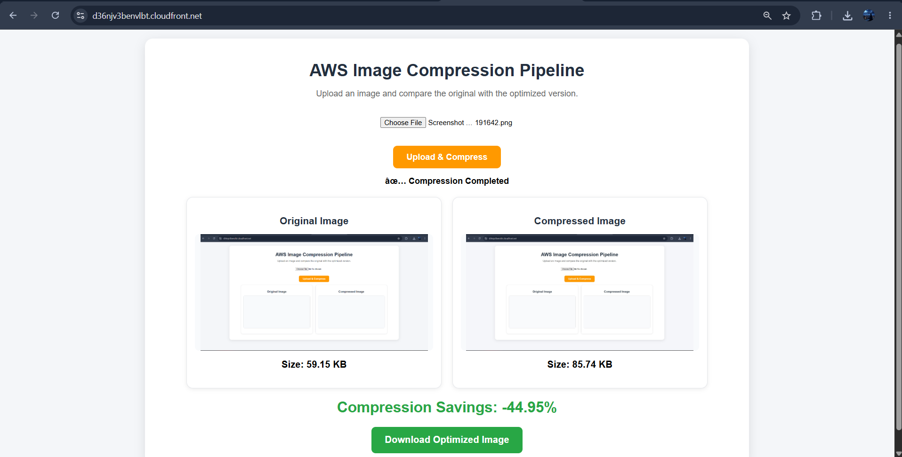

Architecture

The workflow begins with image upload through the frontend. API Gateway invokes Lambda, images are stored in an S3 input bucket, processed automatically, saved to an output bucket, and securely delivered back to users.
AWS Lambda • Amazon S3 • API Gateway • CloudFront • Python
A production-style serverless application that automatically compresses images using AWS Lambda, stores optimized files in Amazon S3, and securely delivers downloads through Presigned URLs.
Built entirely using AWS managed services with no servers to provision or maintain.
Image uploads automatically trigger AWS Lambda functions through S3 event notifications.
Compressed images are delivered using Presigned URLs without exposing storage buckets publicly.
Users upload images through a responsive web application and receive optimized versions automatically.
The solution leverages AWS services to process images efficiently while maintaining scalability and reliability.
The application is deployed through Amazon CloudFront and demonstrates a real-world serverless workflow.
The workflow begins with image upload through the frontend. API Gateway invokes Lambda, images are stored in an S3 input bucket, processed automatically, saved to an output bucket, and securely delivered back to users.
Images are compressed immediately after upload.
Users can compare original and compressed images along with file size information.
All processing occurs within AWS without requiring local software installation.
User uploads an image from the browser.
S3 upload automatically triggers a Lambda function.
Python and Pillow optimize the image and store the result.
A secure Presigned URL is generated for download.

Responsive web interface where users upload images for automatic compression and optimization.

Successful image upload triggering the AWS serverless processing workflow.

Comparison between original and compressed images showing file size reduction and download capability.
Resolved browser communication issues by configuring API Gateway and Lambda response headers.
Implemented Presigned URLs to securely download files without making buckets public.
Configured S3 hosting and CloudFront distribution to support global access.
The application compresses images while maintaining visual quality.
Testing achieved significant file-size reduction and improved download performance.
The solution is publicly accessible through CloudFront.
Hands-on experience with AWS Lambda, S3, API Gateway, CloudFront, IAM, CloudWatch, and event-driven architecture.